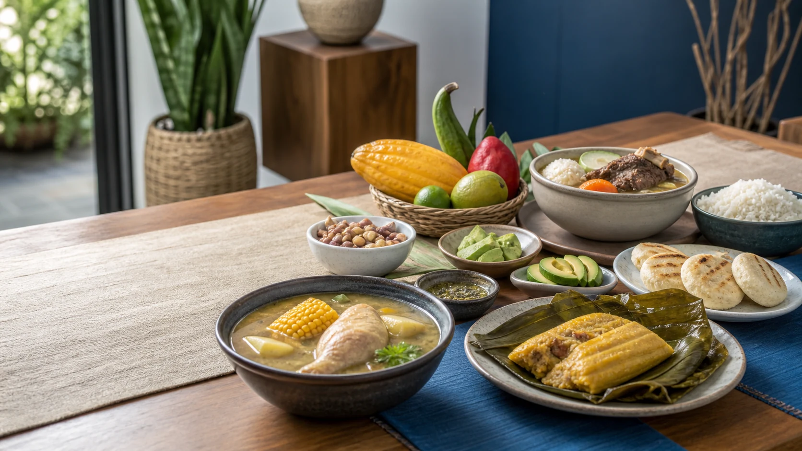

Official assessment
INTERMEDIATE COURSE 1
FINAL WRITING TASK (20%)
Write an Internet publication for the ITM community about two Colombian traditional dishes. Your work is protected with server and local autosave before it is sent to the teacher.

Secure access
Verify your exam access
Authenticate with the account registered in Intermediate English by using the sign-in control in the top navigation. The teacher must activate the official exam before students can begin.
ST
Verified studentVerified account
Sign in at the top of this page. Use the account control in the main navigation, then return here and check availability.
Teacher control room
Final Writing Task administration
Activate the exam, monitor saved attempts, review submissions, and publish the official 20% grade.
No administrative action is pending.
Before you begin
Final check
Once you begin, the 50-minute timer is linked to your server attempt. Reloading the page will not erase your saved publication.
Submission receipt
Your exam was sent to the teacher
Submitted - pending teacher review.